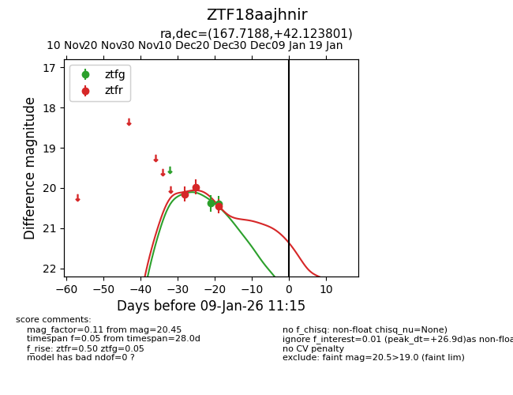
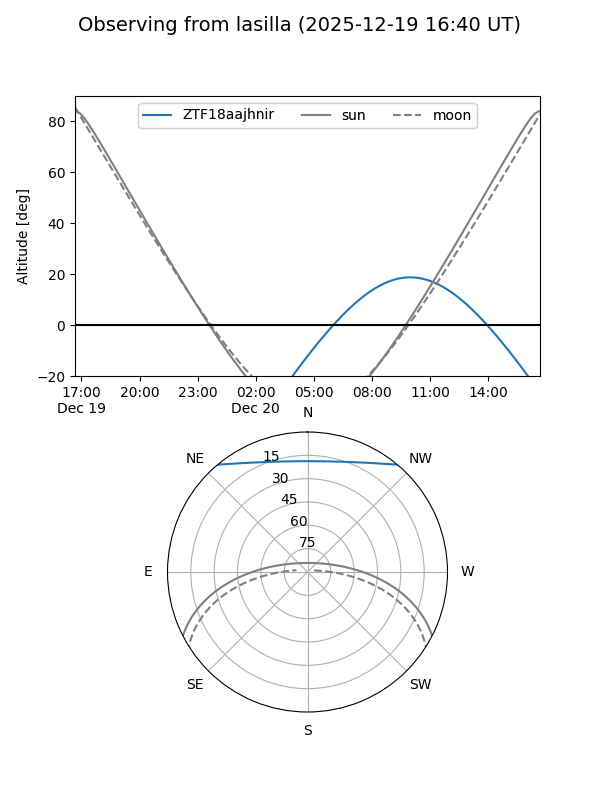
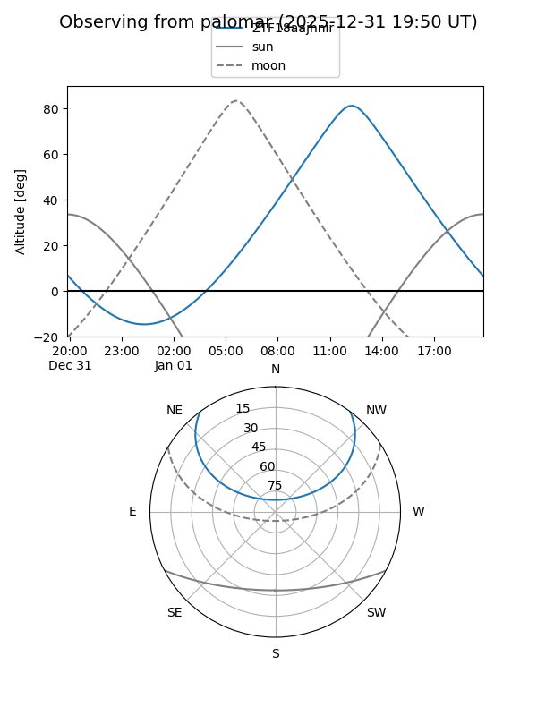
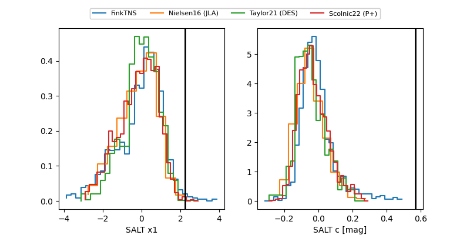

ZTF18aajhnir
Target ZTF18aajhnir at 2025-12-31 18:00
Aliases and brokers:
FINK: link
Lasair: link
ALeRCE: link
alt names
ZTF18aajhnir (ztf,fink_ztf)
Coordinates:
equatorial (ra, dec) = 167.7188,+42.12380
equatorial (HMS+DMS) = 11:10:52.50,+42:07:25.69
galactic (l, b) = (170.2307,+64.61033)
Flags:
Photometry:
last ztfg=20.39, ztfr=20.45
2 ztfg, 3 ztfr detections
Lightcurve

Visibility


Additional plots
